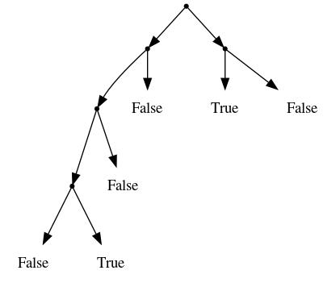
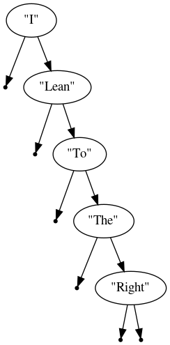

Computer Science 3MI3 – 2020 homework 1
Implementing trees in Scala
Table of Contents
- Introduction
- Boilerplate
- Part 0.1: Installing Scala [0 points]
- Part 0.2: Basic Scala programming [0 points]
- Part 1: Representations of two tree types [20 points]
- Part 2: Flattening trees to lists [20 points]
- Part 3: Elements of a
Tree[Int]in order [20 points] - Part 4: Trees which describe structure [10 points]
- Part 5: Flattening structure trees [bonus 20 points]
- More
LeafTreeandBinTreeexamples
Introduction
Scala is a purely object-oriented language on the JVM, and in addition to object-oriented abstractions it fully supports the abstractions of functional programming. We are interested in it because of this functional programming support.
Herein we implement several types of trees,
the de facto example of an algebraic datatype,
along with flatten-ing functions
which convert those trees to the less structured type of lists.
Boilerplate
Submission procedures
Submission method
Homework should be submitted to your McMaster CAS Gitlab respository
in the cs3mi3-fall2020 project.
Ensure that you have pushed the commits to the remote repository in time for the deadline, and not just committed to your local copy.
Naming requirements
Place all files for the homework
inside a folder titled hn, where n is the number of the homework.
So, for homework 1, the use the folder h1, for homework 2 the folder h2, etc.
Ensure you do not capitalise the h.
Unless otherwise instructed in the homework questions,
place all of your code for the homework
in a single file in the hn folder named hn.ext,
where ext is the appropriate extension for the language used
according to this list:
- For Scala,
extissc. - For Prolog,
extispl. - For Ruby,
extisrb. - For Clojure,
extisclg.
If multiple languages are used in the homework,
submit a hn.ext file for each language.
If the language supports multiple different file extensions, you must still follow the extension conventions above.
Incorrect naming of files may result in up to a 10% deduction in your grade.
Do not submit testing or diagnostic code
Unless you are instructed to do so in the homework questions, you should not submit testing code with your homework submission.
This includes
- any
mainfunction, - any
printstatements which output information that is not directly requested as console output in the homework questions.
If you do not wish to remove diagnostic print statements manually, you will have to find a way to ensure that they disabled in your final submission.
For instance, by using a wrapper on the print function or macros.
Due date and allowance for technical difficulties
Homework is due on the second Sunday following its release, by the end of the day (midnight). Submissions past 00:00 may not be considered.
If you experience technical difficulties leading up to the submission time, please contact Mark ASAP with the details of the problem and, if possible, attach the current state of your homework to the communication. This information will help ensure we are able to accept your submission once the technical difficulties are resolved.
Proper conduct for coursework
Individual work
Unless explicitely stated in the homework questions, all homework in this course is intended to be individually completed.
You are welcome to discuss the content of the homework in the public forum of the class Microsoft Teams team homework channel, though obviously solutions or partial solutions should not be posted or described.
Private discussions about the homework cannot reasonably be forbidden, but such discussions should follow the same guidelines as public discussions.
Inappopriate collaboration via private discussions which is later discovered by course staff may be considered academic dishonesty.
When in doubt, make the discussion private, or report its contents to the course staff by making a note of it in your homework.
To clarify what is considered appropriate discussions of homework content, here are some examples:
- Discussing the language features introduced or needed for the homework.
- Such as relevant builtin datatypes and datatype definition methods and their general use.
- Code snippets that are not partial solutions to the homework are welcome and encouraged.
- Questions of the form “What is meant by
x?”, “Doesxreally meany?” or “Is there a mistake withx?”- Of course, questions of those form which would be answered by partial solutions are not considered appropriate.
- Questions or advice about errors that may be encountered.
- Such as “If you see a
scala.MatchErroryou should probably add a catch-all_case to yourmatchexpressions.”
- Such as “If you see a
Language library resources
Unless explicitely stated in the questions, it is not expected that you will use any language library resources in the homeworks.
Possible exceptions to this rule include implementations of datatypes we discuss in this course, such as lists or options/maybes, if they are included in a standard library instead of being builtin.
Basic operations on such types would also be allowed.
- For instance,
head,tail,append, etc. on lists would not require explicit permission to be used. - More complex operations such as sorting procedures would require permission before you used them.
Part 0.1: Installing Scala [0 points]
In this course, we will be targetting
- Scala version 2.13 and
- Ammonite, an “improved” Scala REPL (read, evaluate, print loop), version 1.7.1,
as used in the lolhens/ammonite Docker image.
If there is any update to the Docker image, or if for any other reason we change our targeted versions, we will make an announcement on the homepage.
All of that said, any recent version of Scala and Ammonite should suffice for our purposes; it is unlikely we will be using any features which could have compatability issues. You may install whatever is most convenient on your system, and later run tests in the Docker image to verify there are no compatability issues.
So, we recommend whatever installation method that seems appropriate for your operating system, and we link to guides to get you started below.
Installation guides
- The Ammonite homepage.
- Chapter 2 of
the online “Hands-on Scala”, titled “Setting Up”.
- “Hands-on Scala”, by Li Haoyi, is a very recent book on Scala using Ammonite. Its first 5 chapters are free to read online.
Part 0.2: Basic Scala programming [0 points]
Some basic tutorial on Scala will be given in an upcoming lecture, and also in the tutorials, and should provide you with the knowledge you need to complete this homework.
In the meantime, there are numerous useful guides online which can get you started. In particular, the introductory chapters of the aforementioned “Hands-on Scala”, which are freely available online.
Part 1: Representations of two tree types [20 points]
In Scala, implement the following types.
- The type of unordered binary trees which,
given an arbitrary type
A, carry elements ofAin their leaves (nodes without children) only. Call this typeLeafTree. - The type of unordered binary which,
given an arbitrary type
A, carry elements ofAon each node. Call this typeBinTree.
There are multiple ways you could implement these types in Scala,
and we will not force you to choose a particular implementation here.
But we recommend implementing them using sealed traits and case class-es,
as discussion in “Hands-on Scala”
section 5.1.
case class-es in Scala are used to implement algebraic datatypes,
which you may have seen in Haskell
data LeafTree a = Leaf a | Branch (LeafTree a) (LeafTree a)
or Elm
type LeafTree a = Leaf a | Branch (LeafTree a) (LeafTree a)
The type LeafTree on Int represents trees such as

While the type BinTree on Int represents trees such as

Also see More LeafTree and BinTree examples.
Part 2: Flattening trees to lists [20 points]
Implement a function named flatten for our two tree types
defined avoid, each of which convert the trees to lists,
discarding the tree structure.
Note that we are able to reuse the name flatten for two different
functions so long as the type signatures are different.
Specifically,
- the first
flattenshould have typeLeafTree[A] => List[A], and - the second
flattenshould have typeBinTree[A] => List[A].
For the LeafTree type, the elements should appear in the same
left-to-right order as they did in the tree.
So the above example tree would flatten to the list [1,2,3,4].
For the BinTree type, for a given node N,
all elements in the left subtree of N
should appear in the list before the element of said node, and
all elements in the right subtree of that node
should appear in the list after the element of said node.
So the above example tree would flatten to [2,1,4,3,5].
Part 3: Elements of a Tree[Int] in order [20 points]
For each of the two tree types we have implemented, implement
a function orderedElems which converts trees containing integers
into lists which are sorted in increasing order. So,
- the first
orderedElemsshould have typeLeafTree[Int] => List[Int], and - the second
orderedElemsshould have typeBinTree[Int] => List[Int]
and in each case you must ensure the result is ordered in increasing order.
You must implement your own sorting function on integer lists, not use any builtin or library functions.
The marking of these functions will take into account the elegance of the solution.
Try to avoid unnecessary or repeated work.
Edited September 17th: that said, based on statements I (Mark) have made to inquiring students, and because this is the first homework, the marking of this homework will still assign at least a “good” mark to any solution which matches the description in the first two paragraphs.
Part 4: Trees which describe structure [10 points]
Implement one additional type of unordered binary trees which,
given arbitrary types A and B,
carry elements of A in their non-leaf nodes
and elements of B in their leaf nodes.
Call this type StructTree.
- This naming is inspired by the fact that these trees
can be seen as an
Alabelled structure on top of elements ofB. Note the similarity to parse trees.
Edited September 17th: The correct way to write two type parameters
on a definition is StructTree[A,B], not StructTree[A][B] as
I previously used below.
The type StructTree[String,Int] could be used
to represent trees such as

Part 5: Flattening structure trees [bonus 20 points]
Define an appropriate flatten operation for the StructTree type.
As this is a bonus question, there are many possible interpretations of “appropriate”, and the marks for this question will heavily depend upon which interpretation you use.
Try to come up with an implementation which discards as little structure as possible, bearing in mind that the transformation to lists necessitates discarding at least some structure.
More LeafTree and BinTree examples
Motivated by discussion of what is a proper BinTree or LeafTree,
I have produced a few more examples here.
LeafTree
The LeafTree type still consists of binary trees.
Every (non-leaf) node must have two children,
and they are either non-leaf nodes or leaves.
Note that nothing says the tree must be balanced or ordered in any way, as this example should hopefully convey.

BinTree
It is possible to think of our BinTree type allowing each node
to have 0, 1 or 2 children.
But it is likely easier to represent and perhaps understand
if we think of every (non-leaf) having exactly two children,
with the possibility that one or both of them are the “empty tree”.
This example shows several nodes which seem to have one child only in this way.
